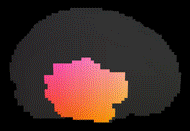

Your browser does not support WebGL :-(
Double Click: long shot
Ctrl + Left Click: dollying
Shift + Left Click: panning
Ctrl + Shift + Left Click: roll
Dataset
Point Size:
Opacity:
Section axis none x axis y axis z axis
Intensity Map
